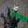
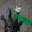

Data Augmentation
Documentation of data augmentation strategies used in training each model.
Configuration
Augmentation parameters are defined in src/chess_cv/constants.py:
AUGMENTATION_CONFIGS = {
"pieces": {
"padding": 16,
"padding_mode": "edge",
"rotation_degrees": 10,
"center_crop_size": 40,
"final_size": 32,
"resized_crop_scale": (0.54, 0.74),
"resized_crop_ratio": (0.9, 1.1),
"arrow_probability": 0.80,
"highlight_probability": 0.25,
"move_probability": 0.50,
"mouse_probability": 0.90,
"horizontal_flip": True,
"horizontal_flip_prob": 0.5,
"brightness": 0.15,
"contrast": 0.2,
"saturation": 0.2,
"hue": 0.2,
"noise_mean": 0.0,
"noise_sigma": 0.05,
},
"arrows": {
"arrow_probability": 0.0,
"highlight_probability": 0.25,
"move_probability": 0.50,
"scale_min": 0.75,
"scale_max": 1.0,
"horizontal_flip": False,
"brightness": 0.20,
"contrast": 0.20,
"saturation": 0.20,
"hue": 0.2,
"rotation_degrees": 2,
"noise_mean": 0.0,
"noise_sigma": 0.10,
},
"snap": {
"arrow_probability": 0.50,
"highlight_probability": 0.20,
"move_probability": 0.50,
"mouse_probability": 0.80,
"mouse_padding": 134,
"mouse_rotation_degrees": 5,
"mouse_center_crop_size": 246,
"mouse_final_size": 32,
"mouse_scale_range": (0.20, 0.30),
"mouse_ratio_range": (0.8, 1.2),
"horizontal_flip": True,
"horizontal_flip_prob": 0.5,
"brightness": 0.15,
"contrast": 0.2,
"saturation": 0.2,
"hue": 0.2,
"noise_mean": 0.0,
"noise_sigma": 0.05,
},
}
Pieces Model Pipeline


 

The first row shows original training images, while the second row displays their augmented versions for the pieces model.
Applied in order during training:
-
Expand Canvas (16px padding): Pads image by 16px on all sides using edge replication mode (32×32 → 64×64). Creates space for rotation without cropping piece edges.
-
Random Rotation (±10°): Rotates image with black fill. More aggressive than previous ±5° to improve robustness.
-
Center Crop (40×40): Removes black corners introduced by rotation using conservative formula:
64 - (ceil(tan(10°) × 64) × 2) = 40. Ensures no rotation artifacts remain. -
Random Resized Crop (area scale 0.54-0.74, aspect ratio 0.9-1.1, output 32×32): Crops random region then resizes to 32×32. Base area ratio (32/40)² = 0.64 provides translation without zoom. Range 0.54-0.74 adds ±16% zoom variation. Aspect ratio 0.9-1.1 allows ±10% stretch for additional robustness.
-
Arrow Overlay (80% probability): Overlays random arrow component from
data/arrows/. Applied after geometric transforms to maintain crisp arrow graphics. -
Highlight Overlay (25% probability): Overlays semi-transparent highlight from
data/highlights/. -
Move Overlay (50% probability): Overlays random move indicator (dot/ring) from
data/moves/. Simulates move annotations on pieces during gameplay. -
Mouse Overlay (90% probability): Overlays random mouse cursor from
data/mouse/with geometric transformations. Applies padding (134px), small rotation (±5°), center crop (246×246), random resized crop to final size (32×32) with scale 0.20-0.30 and ratio 0.8-1.2, making cursor smaller and positioning it randomly on the piece. -
Horizontal Flip (50% probability): Flips image left-to-right.
-
Color Jitter: Randomly adjusts brightness (±15%), contrast (±20%), saturation (±20%), and hue (±20%).
-
Gaussian Noise (σ=0.05): Adds noise to normalized [0,1] pixels.
Arrows Model Pipeline


The first row shows original training images, while the second row displays their augmented versions for the arrows model.
Applied in order during training:
-
Highlight Overlay (25% probability): Overlays semi-transparent highlight from
data/highlights/. Applied early before other transforms. -
Move Overlay (50% probability): Overlays random move indicator (dot/ring) from
data/moves/. Simulates move annotations on arrow components. -
Color Jitter: Randomly adjusts brightness, contrast, saturation by ±20%, and hue by ±20%.
-
Random Rotation (±2°): Small rotation to preserve arrow directionality.
-
Gaussian Noise (σ=0.10): Adds noise to normalized [0,1] pixels. Higher noise than pieces model.
Snap Model Pipeline

The first row shows original training images with varying piece centering, while the second row displays their augmented versions for the snap model.
Applied during preprocessing:
-
Piece Positioning: Applies translation to simulate different degrees of misalignment:
- "ok" class: 0-2px shifts (minimal/slight misalignment)
- "bad" class: 3-14px shifts (significant misalignment)
-
Zoom Variation: Applies (-10%, +15%) random scaling to both classes for zoom robustness. Scaling is applied around the image center to preserve centering semantics while making the model resistant to different zoom levels.
Applied in order during training:
-
Arrow Overlay (50% probability): Overlays random arrow component from
data/arrows/. Applied early to simulate realistic interface conditions where arrows may be present during piece positioning. -
Highlight Overlay (20% probability): Overlays semi-transparent highlight from
data/highlights/. Simulates square highlighting that may occur during piece placement. -
Move Overlay (50% probability): Overlays random move indicator (dot/ring) from
data/moves/. Simulates move indicators during piece positioning evaluation. -
Mouse Cursor Overlay (80% probability): Overlays random mouse cursor from
data/mouse/with geometric transformations. Applies padding (134px), small rotation (±5°), center crop (246×246), random resized crop to final size (32×32) with scale 0.20-0.30 and ratio 0.8-1.2, making cursor smaller and positioning it randomly on the piece. -
Horizontal Flip (50% probability): Flips image left-to-right. Centering semantics are preserved under horizontal flip.
-
Color Jitter: Randomly adjusts brightness (±15%), contrast (±20%), saturation (±20%), and hue (±20%).
Note: The snap model uses conservative augmentation during training with no additional geometric transformations like rotation, cropping, or further scaling beyond the zoom variation in preprocessing. This preserves piece centering semantics—the model needs to distinguish between properly centered and poorly positioned pieces. Zoom variation in preprocessing (-10%, +15%) provides robustness to different zoom levels while maintaining the fundamental centering distinction.
Key Differences
| Augmentation | Pieces | Arrows | Snap | Reason |
|---|---|---|---|---|
| Canvas Expansion | 16px edge padding (32→64) | ❌ | ❌ | Creates rotation space without edge cropping |
| Rotation | ±10° | ±2° | ❌ | Snap needs to preserve centering semantics |
| Center Crop | 40×40 (removes black corners) | ❌ | ❌ | Removes rotation artifacts |
| Random Resized Crop | Area 0.54-0.74, ratio 0.9-1.1 | ❌ | ❌ | Translation + zoom would alter centering |
| Arrow Overlay | 80% | ❌ | 50% | Simulates interface arrows during positioning |
| Highlight Overlay | 25% | 25% | 20% | Simulates square highlighting |
| Move Overlay | 50% | 50% | 50% | Simulates move indicators on pieces/arrows |
| Mouse Overlay | 90% | ❌ | 80% | Simulates cursor interaction during placement |
| Horizontal Flip | 50% | ❌ | 50% | Centering semantics preserved under flip |
| Color Jitter | B±15%, CSH±20% | ±20% (BCSH) | B±15%, CSH±20% | Snap uses same variation as pieces |
| Gaussian Noise | σ=0.05 | σ=0.10 | σ=0.05 | Snap uses same noise level as pieces |
Implementation
The training script (src/chess_cv/train.py) constructs the pipeline dynamically based on model type:
Pieces Model:
# 1. Expand canvas (32×32 → 64×64)
v2.Pad(padding=16, padding_mode="edge")
# 2. Rotate with black fill
v2.RandomRotation(degrees=10, fill=0)
# 3. Remove black rotation artifacts (64×64 → 40×40)
# Formula: 64 - (ceil(tan(10°) × 64) × 2) = 40
v2.CenterCrop(size=40)
# 4. Random crop + zoom + resize (40×40 → 32×32)
# Area scale: (32/40)² ± 0.1 = 0.64 ± 0.1 → (0.54, 0.74)
# Aspect ratio: ±10% stretch → (0.9, 1.1)
v2.RandomResizedCrop(size=32, scale=(0.54, 0.74), ratio=(0.9, 1.1))
# 5-8. Overlays
RandomArrowOverlay(probability=0.80)
RandomHighlightOverlay(probability=0.25)
RandomMoveOverlay(probability=0.50)
RandomMouseOverlay(probability=0.90)
# 9-10. Geometric + color
v2.RandomHorizontalFlip(p=0.5)
v2.ColorJitter(brightness=0.15, contrast=0.2, saturation=0.2, hue=0.2)
# 11. Noise (requires tensor conversion)
v2.ToImage() → v2.ToDtype() → v2.GaussianNoise() → v2.ToPILImage()
Arrows Model:
# 1. Highlight overlay
RandomHighlightOverlay(probability=0.25)
# 2. Move overlay
RandomMoveOverlay(probability=0.50)
# 3-4. Color + rotation
v2.ColorJitter(brightness=0.2, contrast=0.2, saturation=0.2, hue=0.2)
v2.RandomRotation(degrees=2)
# 5. Noise (requires tensor conversion)
v2.ToImage() → v2.ToDtype() → v2.GaussianNoise() → v2.ToPILImage()
Snap Model:
# 1-4. Overlays
RandomArrowOverlay(probability=0.50)
RandomHighlightOverlay(probability=0.20)
RandomMoveOverlay(probability=0.50)
RandomMouseOverlay(probability=0.80)
# 5-6. Geometric + color
v2.RandomHorizontalFlip(p=0.5)
v2.ColorJitter(brightness=0.15, contrast=0.2, saturation=0.2, hue=0.2)
# 7. Noise (requires tensor conversion)
v2.ToImage() → v2.ToDtype() → v2.GaussianNoise() → v2.ToPILImage()